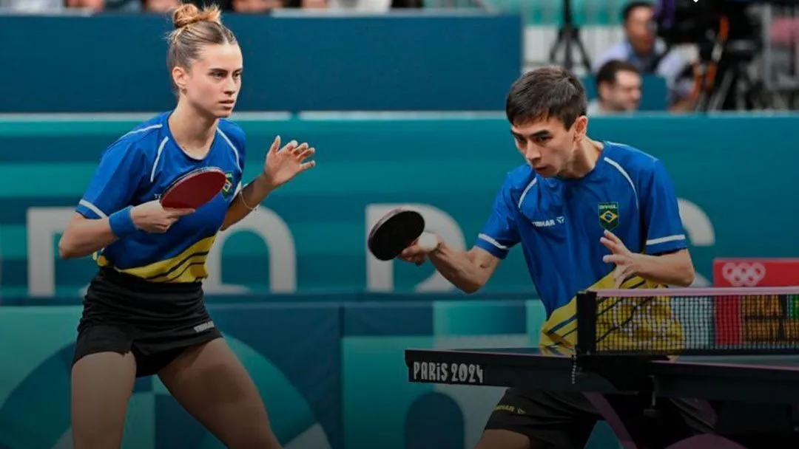
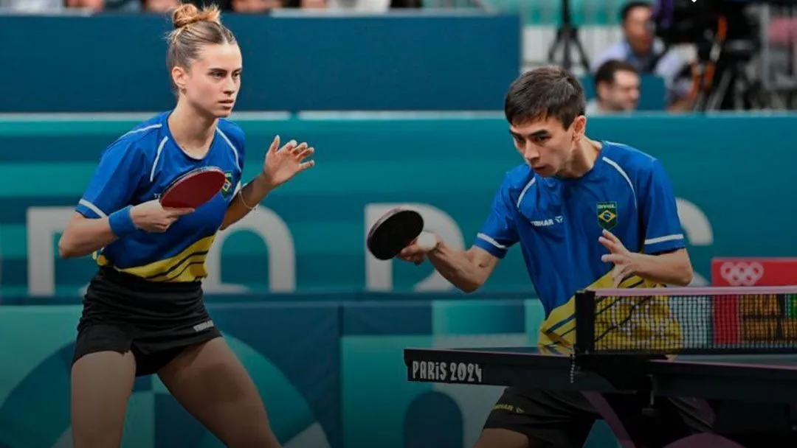

hello world!
Você sabia que o tênis de mesa é um dos esportes mais praticados no Brasil — e, ao mesmo tempo, um dos menos falados? Apesar da fama de ser um "esporte de lazer", o tênis de mesa brasileiro carrega histórias de superação, talento e paixão que rivalizam com qualquer modalidade olímpica. Desde garagens e clubes de bairro até competições internacionais, milhares de brasileiros vêm transformando o que muitos chamam de "ping-pong" em um verdadeiro show de técnica e velocidade. O Brasil já revelou atletas que desafiaram gigantes asiáticos e europeus nas mesas do mundo, como Hugo Calderano, que rompeu barreiras e colocou o país no mapa da elite mundial. E o mais surpreendente? O tênis de mesa ainda está crescendo — com novos talentos surgindo nas escolas públicas, projetos sociais e centros de treinamento por todo o país. Quer descobrir como esse esporte vem conquistando corações, mesas e medalhas no Brasil? Então continue navegando — porque o jogo está só começando.
Tiago Apolónia Tiago Apolónia é um dos atletas mais respeitados no cenário internacional do tênis de mesa. Nascido em Lisboa, ele começou sua carreira em idades muito jovens e, com o tempo, se destacou pelas suas habilidades técnicas e pela sua mentalidade vencedora. Sua vitória mais marcante foi em 2010, quando conquistou o título de campeão europeu de duplas mistas, ao lado de Cátia Oliveira. Apolónia também foi uma peça fundamental para a Seleção Nacional de Portugal, contribuindo com excelentes desempenhos nas competições internacionais. A trajetória de Tiago é marcada por um trabalho árduo e constante evolução. Ele soube se adaptar às mudanças no jogo e sempre manteve a sua mentalidade focada no objetivo final: a vitória. Seu estilo de jogo, caracterizado por grande precisão nos movimentos e um controle notável sobre o tempo de reação, fez dele um adversário temido em qualquer torneio. Marcos Freitas Marcos Freitas é, talvez, o atleta de tênis de mesa mais famoso de Portugal. Natural de São João da Madeira, Marcos começou a se destacar nas competições de base ainda muito jovem, sendo uma promessa do esporte. No entanto, foi ao longo de sua carreira internacional que ele realmente se tornou um ícone, com participações em Jogos Olímpicos, Campeonatos Mundiais e Europeus. Uma das suas grandes vitórias foi o título europeu de 2015, onde ele conseguiu vencer grandes nomes do tênis de mesa mundial, confirmando seu status como um dos melhores jogadores da sua geração. Marcos também tem se destacado em diversas edições da Liga Mundial, sendo um dos protagonistas do tênis de mesa português. Sua combinação de técnica apurada e grande resistência física o coloca como um dos grandes nomes do esporte, não só em Portugal, mas no mundo inteiro.
Como conquistaram a vitória: A importância da união A vitória de Tiago Apolónia e Marcos Freitas em várias competições não é apenas fruto do talento individual, mas também do trabalho em conjunto e da busca constante pela superação. Embora ambos tenham suas vitórias individuais, foi em momentos de colaboração e troca de experiências que eles conseguiram se destacar ainda mais. O apoio mútuo, a troca de táticas e o incentivo nos momentos mais difíceis fortaleceram a dupla e foram fundamentais para a conquista de vitórias tanto em torneios internacionais como no Campeonato Europeu. Em competições de duplas, a sincronia entre Tiago e Marcos é impressionante. O domínio das táticas de jogo, a capacidade de antecipar os movimentos do adversário e a confiança um no outro durante as partidas criam uma relação que vai além da simples parceria esportiva: é uma amizade que fortalece cada vez mais suas performances no jogo. Em Resumo Tiago Apolónia e Marcos Freitas são dois dos maiores talentos do tênis de mesa mundial. Suas vitórias não são apenas um reflexo de sua habilidade, mas também da sua dedicação incansável ao esporte, da mentalidade vencedora e da forte parceria que desenvolveram ao longo dos anos. Eles são exemplos de como o talento, combinado com trabalho duro, perseverança e trabalho em equipe, pode levar atletas a conquistar grandes vitórias no cenário internacional.
A Bruna Takahashi é uma das atletas mais notáveis do tênis de mesa brasileiro. Nascida em São Paulo, ela se destacou desde jovem no esporte, ganhando destaque em competições nacionais e internacionais. Bruna começou a jogar tênis de mesa quando era ainda uma criança e rapidamente mostrou seu talento e dedicação, o que a levou a se tornar uma das principais figuras do esporte no Brasil. Com um estilo de jogo técnico e estratégico, Bruna é conhecida por sua habilidade em adaptar-se a diferentes tipos de adversários, além de sua mentalidade forte durante os jogos. Sua especialidade está no jogo de ataque rápido e na adaptação de técnicas, algo que a torna uma jogadora muito difícil de ser superada. Bruna Takahashi fez história ao ser a primeira brasileira a conquistar uma medalha de ouro no Campeonato Pan-Americano de Tênis de Mesa, além de se destacar em outras competições internacionais. Ela também teve a oportunidade de representar o Brasil nas Olimpíadas de Tóquio 2020, consolidando seu nome no cenário mundial da modalidade. Sua trajetória é inspiradora, pois Bruna não só tem talento, mas também uma mentalidade muito focada em evolução constante. A cada campeonato, ela busca aprimorar sua técnica e melhorar seu desempenho, e sua dedicação ao esporte é um reflexo do alto nível que o tênis de mesa brasileiro atingiu nas últimas décadas. Além de suas conquistas no esporte, Bruna é vista como uma referência para jovens atletas, especialmente no Brasil, onde o tênis de mesa, apesar de ter uma base sólida, ainda não tem o mesmo reconhecimento que outras modalidades. Seu sucesso ajuda a elevar o esporte no país, trazendo visibilidade e encorajando novas gerações a se dedicarem a essa modalidade tão exigente e técnica.
Hugo Calderano é um dos maiores nomes do tênis de mesa mundial da atualidade, sendo um dos atletas mais notáveis da história do esporte no Brasil. Nascido em 14 de junho de 1996, no Rio de Janeiro, Hugo começou a praticar o tênis de mesa ainda criança e logo se destacou por sua técnica refinada, velocidade e impressionante consistência nas competições internacionais. Desde os primeiros anos da sua carreira, Calderano demonstrou um enorme talento e dedicação ao esporte. Ele foi se aprimorando cada vez mais e, com isso, conquistando o reconhecimento internacional. Em 2016, chegou a um marco importante ao se tornar o primeiro brasileiro a atingir o Top 20 do ranking mundial da Federação Internacional de Tênis de Mesa (ITTF). A partir daí, sua trajetória foi marcada por vitórias em grandes torneios e medalhas em campeonatos mundiais. Calderano se tornou um ícone não apenas no Brasil, mas também no cenário global. Em 2021, ele conquistou o título de campeão da Copa do Mundo de Tênis de Mesa, um feito histórico para o Brasil e que consolidou seu nome entre os grandes da modalidade. Com seu estilo agressivo de jogo, combina força física, velocidade e precisão, sempre buscando a combinação perfeita entre estratégia e técnica. Além de suas conquistas individuais, Hugo tem sido uma inspiração para novos atletas que desejam seguir carreira no esporte. Ele também se tornou um símbolo de superação, mostrando que é possível chegar ao topo do esporte mundial mesmo vindo de um país onde o tênis de mesa não é tradicionalmente um dos esportes mais populares. Com uma mentalidade focada e um trabalho árduo, Hugo Calderano se estabeleceu como uma das figuras mais importantes da história do tênis de mesa, e seu legado continuará a influenciar gerações futuras de atletas brasileiros e internacionais. O futuro promete mais vitórias e recordes para o jovem prodígio, que segue buscando se superar a cada novo desafio.

 
